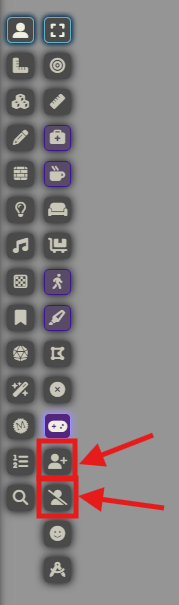

Patch 2.7 – Session 16
Patch 2.7 – Session 16
 Système
Système
 L'interface "Baldur's Gate 3" a été mise à jour.Désormais, lorsqu'une action bonus ou réaction est utilisée, les aptitudes coûtant une action bonus ou réaction sont grisées pour indiquer qu'elles sont consommées.Il reste possible de forcer leur utilisation en cliquant dessus, au besoin.
L'interface "Baldur's Gate 3" a été mise à jour.Désormais, lorsqu'une action bonus ou réaction est utilisée, les aptitudes coûtant une action bonus ou réaction sont grisées pour indiquer qu'elles sont consommées.Il reste possible de forcer leur utilisation en cliquant dessus, au besoin.- Lorsqu'un coup critique est réalisé, une animation unique est désormais jouée.
- Les Tokens des joueurs ont été remplacés par des Tokens utilisant le système de Tokens Dynamiques de Foundry VTT.
- Le module permettant à deux Tokens de se suivre à été changé, le système a donc été modifié.Ce changement est effectué car le module d'origine n'existe plus, et afin de simplifier le système.Il suffit de sélectionner dans un premier temps le Token qui va suivre.Ensuite, cliquer sur le bouton dans la barre de contrôle des Tokens, sur la gauche de l'écran.Puis, cliquer sur le Token qui sera suivi.Pour annuler le suivi, il faudra cliquer sur le bouton , dans la barre de contrôle des Tokens, sur la gauche de l'écran. (Cliquez sur l'image pour l'agrandir)
Races
 Vaisseau
Vaisseau
- L'aptitude Inimitié des Ombres a été renommée en Inimitié contre les Ombres.
Classes
 Souverain
Souverain
- L'aptitude Ordre de protection cible désormais un nombre quelconque d'alliés volontaires jusqu'au modificateur de Charisme du Souverain, au lieu d'un nombre quelconque illimité.
 Lansquenet
Lansquenet
- L'aptitude Double frappe lance correctement 1d8 pour son calcul de Précision au lieu d'1d20.Je ne suis pas parvenu à reproduire le bug du dé de Double frappe se déclenchant en "décalé". Il faudra y être attentif lors des prochaines sessions.
 Shogun
Shogun
- L'aptitude Hirondelles jumelles applique désormais correctement l'effet de Frappe éclair.
 Vagabond
Vagabond
- Afin de tenter de corriger les problèmes de synchronisation des PA du Vagabond et de son compagnon, ainsi que pour alléger la charge sur le système, la synchronisation s'effectue désormais uniquement au début du tour du Vagabond ou de son compagnon, au lieu de s'effectuer dés que les PA de l'un ou de l'autre changent.Ce changement a également pour effet d'afficher le bouton "Passer le tour" si le compagnon commence son tour avec 1 PA ou moins.
Codex
- La statistique de Défense est désormais affichée sur les fiches des personnages joueurs.
Problèmes résolus
- (Résolu lors de la session 15) L'anneau d'explorateur octroie correctement un bonus de +1 en Perception.
- (Résolu lors de la session 15) Les fusils consomment correctement une charge à l'utilisation.
Problèmes connus
- Certaines emotes ne fonctionnent plus correctement sur les nouveaux Tokens des joueurs.